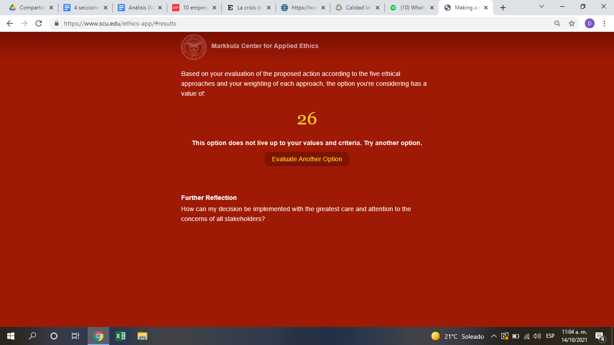

Análisis Malas Prácticas Profesionales sobre IIS
Artículo por Diana Laura Almari Cruz GómezDado que la Ingeniería Industrial es una rama de conocimientos que tiene como propósito buscar maneras de optimizar los procesos productivos de todo tipo de compañías, la calidad es uno de los elementos clave para lograr esto. La calidad está definida como la estructura de una organización, los procedimientos y los recursos que son necesarios para realizar un método que asegure que un producto o servicio logre satisfacer las necesidades y expectativas de los clientes durante todo su ciclo de vida. Asimismo, la calidad busca salvaguardar en todo momento la seguridad de los consumidores.
Considerando lo anterior, se utilizó el PLUS Ethical Decision Making Model para analizar las malas prácticas tomadas por parte de la industria Ford y Firestone.
PLUS
Los defectos de los neumáticos Firestone se conocían desde hace cuatro años.
En el año 2000, particularmente en Estados Unidos tras los defectos que contaba una línea de neumáticos Firestone, las cuales usaban las camionetas Explorer, provocaron la muerte de más de 100 personas en accidentes automovilísticos. Por tal motivo, Firestone tuvo uno de los retiros de llantas más notables de nuestra era.
Lo más sorprendente fue que los problemas de los neumáticos defectuosos fueron descubiertos cuatro años antes de revelarse que habían sido la causa de accidentes en los que han perecido más de 100 personas en carreteras estadounidenses. Por lo que Firestone indicó que en las pruebas de calidad sí se hallaron desperfectos laterales, pero no una separación de las costuras en la parte del neumático que entra en contacto directo con el terreno. Por muchos veces, hubo una serie de acusaciones entre la empresa Ford y Firestone, ya que ninguno quería aceptar la responsabilidad, ya que Ford afirmó que Firestone retuvo información que podría haber llevado a un retiro más rápido de los neumáticos, en tanto que la empresa fabricante indicó que el diseño del Ford Explorer fue un factor fundamental de los accidentes.
Sin embargo, Firestone tuvo que aceptar la devolución de 6,5 millones de neumáticos y la sustitución de 1,4 millones de neumáticos de otros tipos que pudieran considerarse inseguros.
Utilizando la aplicación de la Universidad de Santa Clara, se encontró lo siguiente:
- Utilidad: Sólo la empresa se beneficia, sin salvaguardar la seguridad de sus clientes.
- Derechos: Por un momento se ignoraron los derechos de los consumidores hasta que el caso se empezó a agravar y fue llamado de emergencia por el área de justicia.
- Justicia: Reparar los daños ocasionados sin importar el lugar donde uno se encuentre por el simple hecho de haber comprado dicho producto.
- Bien común: Sólo la empresa se benefició por un momento aunque después tuvo que reparar el daño, costandole miles de millones de dólares.
- Virtud: No sigue actos honestos y transparentes con la información de sus productos.
*Nota: Todos los criterios tienen la misma ponderación de importancia.
Como profesionistas y encargados de una de las áreas más críticas en una industria como es la calidad es muy importante ser muy transparentes con la información, sobre todo, cuando hay convenios entre dos empresas, ya que ambas salen perjudicadas en caso de alguna situación buena o mala. Este ejemplo es un claro hecho de que aunque Ford como Firestone busquen alguna justificación a su error, se siguieron beneficiando de las ganancias generadas arriesgando la vida de otros.
Referencias:
- González, E. (2001, May 22). La Amarga Ruptura de Ford y Firestone. El País. Retrieved November 18, 2021, from https://elpais.com/diario/2001/05/23/economia/990568813_850215.html.
- MiryamMoya. (2016, May 2). Caso Ford – firestone: Decisiones rápidas con Consecuencias Mortales. MIRYAM MOYA - ACCIDENTES DE TRAFICO Y SEGURIDAD VIAL. Retrieved November 18, 2021, from https://accidentesdetraficoyseguridadvialblogspotcomes.wordpress.com/2016/03/29/caso-ford-firestone-decisiones-rapidas-con-consecuencias-mortales/.